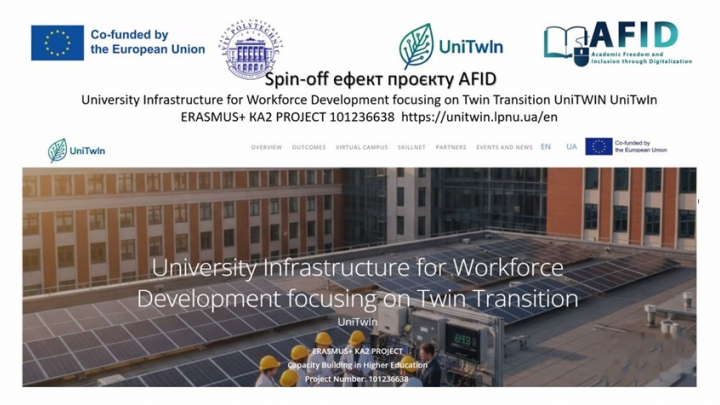
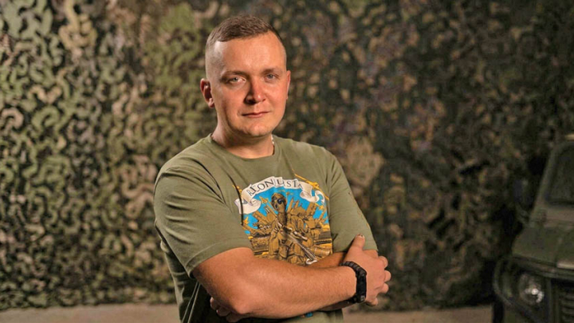
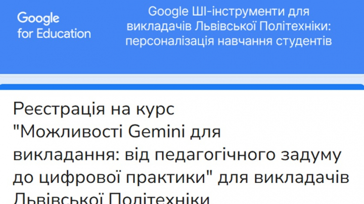
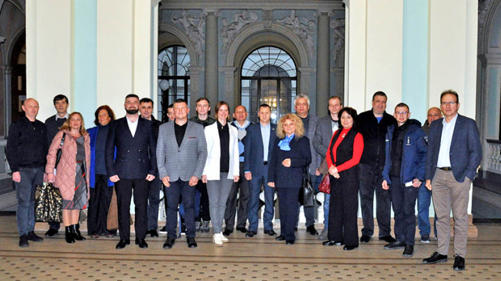
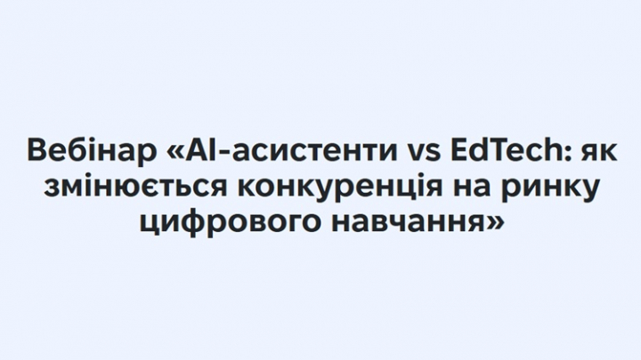

11 ЛИСТОП. 2026, 12:12
11 ЛИСТОП. 2026, 12:12
Новини університету
11 ЛИСТОП. 2026, 12:12

11 ЛИСТОП. 2026, 11:45Професор Ігор Олексів представив результати проєкту Еразмус+ КА2 AFID на міжнародній Болонській конференції

11 ЛИСТОП. 2026, 11:15«В історика завжди є два варіанти: досліджувати історію або брати участь у її творенні»: Михайло Галущак про війну та нову книжку

11 ЛИСТОП. 2026, 10:41Практичні воркшопи Google for Education для викладачів Львівської політехніки
 10 ЛИСТОП. 2026, 17:00
10 ЛИСТОП. 2026, 17:00
Студентка ПЕЕТ Діана Фарат — учасниця тренінгу Erasmus+ «AI Navigator for Youth Work» (Люксембург)

10 ЛИСТОП. 2026, 15:52Компетентності для європейської залізниці: кафедра ТТ представила досвід підготовки бакалаврів і магістрів
 10 ЛИСТОП. 2026, 14:42
10 ЛИСТОП. 2026, 14:42
Студентка кафедри ММП долучилася до міжнародного молодіжного обміну в Дрездені

10 ЛИСТОП. 2026, 12:45